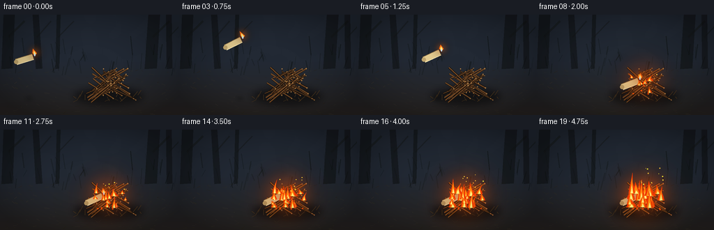
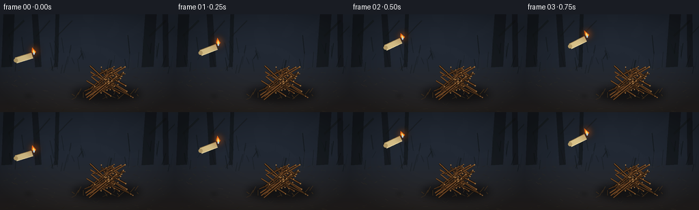

CODING AGENTS AS PIXEL WORLD MODELS
traex/GPT-5.6-Sol · material_0027
点击播放 · 原生 RGB 像素
逐轮保存的候选
回放视频、检查图与代码变化。
每份候选均可单独播放。实际图片检查记录在下方工具轨迹中。
候选 01播放与检查图
点击播放 · 原生 RGB 像素


展开代码变化
--- 上一保存版本
+++ 本次保存版本
@@ -0,0 +1,244 @@
+from pathlib import Path
+import math, random
+import numpy as np
+from PIL import Image, ImageDraw, ImageFilter
+import artifact_io
+
+# Procedural, deterministic 2-D cinematic animation.
+W,H,N,S = 256,144,20,3
+SW,SH=W*S,H*S
+rng=random.Random(2701)
+
+def sc(v): return int(round(v*S))
+def pts(p): return [(sc(x),sc(y)) for x,y in p]
+
+def smooth_noise(w,h,seed,blur=12):
+ rr=np.random.default_rng(seed)
+ a=(rr.random((h,w))*255).astype('uint8')
+ im=Image.fromarray(a).filter(ImageFilter.GaussianBlur(blur*S))
+ return np.asarray(im,dtype=np.float32)/255
+
+# Background texture held stable to make movement readable.
+yy,xx=np.mgrid[0:SH,0:SW]
+base=np.zeros((SH,SW,3),dtype=np.float32)
+horizon=.47*SH
+ground=np.clip((yy-horizon)/(SH-horizon),0,1)
+sky=np.clip(1-ground,0,1)
+base[:,:,0]=16+18*sky+25*ground
+base[:,:,1]=21+20*sky+16*ground
+base[:,:,2]=25+27*sky+10*ground
+base += (smooth_noise(SW,SH,8,8)[:,:,None]-.5)*10
+base=np.clip(base,0,255).astype('uint8')
+base_img=Image.fromarray(base,'RGB')
+
+# Static scenery assets
+bg=base_img.copy(); d=ImageDraw.Draw(bg,'RGBA')
+# vague trunks and branches in a blue-brown dusk
+for x,w,lean in [(13,16,-3),(51,9,5),(221,17,-5),(242,8,1),(84,5,-2)]:
+ d.polygon(pts([(x-w/2,0),(x+w/2,0),(x+w/2+lean,77),(x-w/2+lean,78)]),fill=(15,18,19,150))
+ d.line(pts([(x+lean*.4,32),(x+22,9)]),fill=(20,23,23,120),width=sc(max(2,w*.18)))
+# blurred undergrowth silhouettes
+for i in range(44):
+ x=rng.uniform(-5,261); y=rng.uniform(53,88); hh=rng.uniform(6,27)
+ col=(12,17,17,rng.randint(60,145))
+ d.line(pts([(x,y),(x+rng.uniform(-7,7),y-hh)]),fill=col,width=sc(rng.uniform(.5,1.7)))
+# ground bands and granular leaf litter
+for i in range(140):
+ x=rng.uniform(0,256); y=rng.uniform(79,143)
+ ln=rng.uniform(1,8); ang=rng.uniform(-.7,.7)
+ shade=rng.randint(25,58)
+ d.line(pts([(x,y),(x+ln*math.cos(ang),y+ln*math.sin(ang))]),
+ fill=(shade+12,shade+5,max(15,shade-9),rng.randint(70,180)),width=sc(rng.choice([.35,.55,.8])))
+# foreground vignette later
+
+# Define pile sticks (endpoints, width, warm/dark variety) - interlocked triangular heap.
+sticks=[]
+rp=random.Random(471)
+for i in range(36):
+ # lower sticks broad and long; upper sticks narrower/shorter
+ level=rp.random()**1.4
+ cy=112-level*28
+ cx=157+rp.uniform(-20,20)*(1-.45*level)
+ length=rp.uniform(24,52)*(1-.30*level)
+ angle=rp.choice([-1,1])*rp.uniform(.25,.78)
+ dx=math.cos(angle)*length/2; dy=math.sin(angle)*length/2
+ sticks.append((cx-dx,cy-dy,cx+dx,cy+dy,rp.uniform(1.0,2.1),rp.random()))
+# exposed little branch forks for visual clarity
+forks=[]
+for i in range(14):
+ x1,y1,x2,y2,w,c=sticks[i*2]
+ q=rp.uniform(.3,.72); bx=x1+(x2-x1)*q; by=y1+(y2-y1)*q
+ vx=x2-x1; vy=y2-y1; L=math.hypot(vx,vy); ux=vx/L; uy=vy/L
+ side=rp.choice([-1,1]); length=rp.uniform(5,12)
+ forks.append((bx,by,bx+(ux*.45-side*uy*.9)*length,by+(uy*.45+side*ux*.9)*length,max(.7,w*.58)))
+
+# fire base locations, predetermined for temporal coherence
+fire_specs=[]
+rf=random.Random(732)
+for i in range(20):
+ x=rf.uniform(133,181); y=rf.uniform(91,115)
+ phase=rf.uniform(0,math.tau); h=rf.uniform(12,29); width=rf.uniform(4,8)
+ delay=rf.uniform(0,.74)
+ fire_specs.append((x,y,h,width,phase,delay))
+
+def add_radial_glow(im, cx,cy,radius,strength,color=(255,104,20)):
+ arr=np.asarray(im).astype(np.float32)
+ Y,X=np.mgrid[0:SH,0:SW]
+ dist=np.sqrt((X-cx*S)**2+(Y-cy*S)**2)/(radius*S)
+ a=np.clip(1-dist,0,1)**2*strength
+ c=np.array(color,dtype=np.float32)
+ arr=arr*(1-a[:,:,None]) + c*a[:,:,None]
+ return Image.fromarray(np.clip(arr,0,255).astype('uint8'),'RGB')
+
+def draw_smoke(im, frame, growth):
+ if growth<=.05:return
+ layer=Image.new('RGBA',(SW,SH)); dl=ImageDraw.Draw(layer,'RGBA')
+ rs=random.Random(800+frame)
+ # softly connected plumes, drifting right and upward
+ for k in range(8):
+ age=(k+frame*.8)%9
+ cx=153+age*1.7+math.sin(frame*.31+k)*4
+ cy=91-age*5.7
+ rad=(4+age*1.7)*min(1,growth*2.0)
+ alpha=int((22+growth*31)*(1-age/12))
+ dl.ellipse((sc(cx-rad),sc(cy-rad*.55),sc(cx+rad),sc(cy+rad*.55)),fill=(66,62,54,max(0,alpha)))
+ layer=layer.filter(ImageFilter.GaussianBlur(sc(4.2)))
+ im.alpha_composite(layer)
+
+def draw_pile(im, lit):
+ # deep contact shadow
+ sh=Image.new('RGBA',(SW,SH)); ds=ImageDraw.Draw(sh,'RGBA')
+ ds.ellipse((sc(105),sc(104),sc(206),sc(130)),fill=(0,0,0,120))
+ sh=sh.filter(ImageFilter.GaussianBlur(sc(5))); im.alpha_composite(sh)
+ d=ImageDraw.Draw(im,'RGBA')
+ # tiny grass beneath
+ for j in range(18):
+ rr=random.Random(900+j); x=rr.uniform(105,204); y=rr.uniform(112,125)
+ d.line(pts([(x,y),(x+rr.uniform(-9,9),y-rr.uniform(2,9))]),fill=(77,55,29,150),width=sc(.6))
+ # sticks: dark outline + bark + lit ridge
+ for x1,y1,x2,y2,w,c in sticks:
+ warm=lit*max(0,1-abs((x1+x2)/2-155)/55)
+ body=(int(75+65*warm+25*c),int(47+24*warm+12*c),int(25+5*c),255)
+ d.line(pts([(x1,y1),(x2,y2)]),fill=(21,16,12,230),width=max(1,sc(w+1.15)))
+ d.line(pts([(x1,y1),(x2,y2)]),fill=body,width=max(1,sc(w)))
+ d.line(pts([(x1,y1-.35),(x2,y2-.35)]),fill=(142+int(60*warm),94+int(35*warm),48,110),width=max(1,sc(w*.34)))
+ # snapped pale tips
+ d.ellipse((sc(x2-w*.55),sc(y2-w*.55),sc(x2+w*.55),sc(y2+w*.55)),fill=(156+int(50*warm),112,64,220))
+ for x1,y1,x2,y2,w in forks:
+ d.line(pts([(x1,y1),(x2,y2)]),fill=(53,33,18,255),width=max(1,sc(w)))
+ d.ellipse((sc(x2-.65),sc(y2-.65),sc(x2+.65),sc(y2+.65)),fill=(178,128,70,220))
+
+def candle_state(f):
+ if f<=7:
+ u=f/7
+ x=35+101*u
+ y=64-39*math.sin(math.pi*u)+36*u
+ angle=math.radians(-17+(-10*math.sin(u*math.pi)))
+ return x,y,angle
+ # a slight impact bounce, then settles diagonally in the pile
+ wob=math.exp(-(f-7)*.58)*math.sin((f-7)*2.35)
+ return 135+1.7*wob,100-2.2*abs(wob),math.radians(-25+9*wob)
+
+def draw_candle(im,f):
+ cx,cy,a=candle_state(f); ux,uy=math.cos(a),math.sin(a); px,py=-uy,ux
+ L=25; wid=8.5
+ back=(cx-ux*L/2,cy-uy*L/2); tip=(cx+ux*L/2,cy+uy*L/2)
+ poly=[(back[0]+px*wid/2,back[1]+py*wid/2),(tip[0]+px*wid/2,tip[1]+py*wid/2),
+ (tip[0]-px*wid/2,tip[1]-py*wid/2),(back[0]-px*wid/2,back[1]-py*wid/2)]
+ d=ImageDraw.Draw(im,'RGBA')
+ # subtle moving shadow under flying object
+ sy=120; shadowx=cx+(sy-cy)*.12
+ sd=Image.new('RGBA',(SW,SH)); sdraw=ImageDraw.Draw(sd,'RGBA')
+ rad=max(3,10-(sy-cy)*.07); sdraw.ellipse((sc(shadowx-rad),sc(sy-2),sc(shadowx+rad),sc(sy+2)),fill=(0,0,0,70))
+ sd=sd.filter(ImageFilter.GaussianBlur(sc(2.5))); im.alpha_composite(sd)
+ d.polygon(pts(poly),fill=(226,202,143,255))
+ d.line(pts([poly[0],poly[1]]),fill=(255,239,188,220),width=sc(1.15))
+ d.line(pts([poly[3],poly[2]]),fill=(132,104,62,170),width=sc(1.0))
+ # rear elliptical cap and wax drips
+ d.ellipse((sc(back[0]-3),sc(back[1]-3),sc(back[0]+3),sc(back[1]+3)),fill=(191,164,108,180))
+ # wick projects from burning face
+ wick0=(tip[0]+ux*1,tip[1]+uy*1); wick1=(tip[0]+ux*2.7,tip[1]+uy*2.7-1)
+ d.line(pts([wick0,wick1]),fill=(34,23,17,255),width=sc(1))
+ # lit flame remains buoyant upward, leans left during flight
+ speed=1 if f<7 else .1
+ bx,by=wick1
+ flick=math.sin(f*1.63)*1.4
+ h=10+1.3*math.sin(f*2.1)
+ lean=-2.7*speed+flick
+ glow=Image.new('RGBA',(SW,SH)); gd=ImageDraw.Draw(glow,'RGBA')
+ gd.ellipse((sc(bx-9),sc(by-h-4),sc(bx+9),sc(by+5)),fill=(255,105,14,100))
+ glow=glow.filter(ImageFilter.GaussianBlur(sc(5))); im.alpha_composite(glow)
+ d=ImageDraw.Draw(im,'RGBA')
+ outer=[(bx,by+1),(bx-3.3,by-h*.38),(bx+lean,by-h),(bx+3.2,by-h*.35)]
+ d.polygon(pts(outer),fill=(255,111,18,245))
+ inner=[(bx,by),(bx-1.7,by-h*.33),(bx+lean*.45,by-h*.70),(bx+1.8,by-h*.29)]
+ d.polygon(pts(inner),fill=(255,238,126,255))
+ d.ellipse((sc(bx-1),sc(by-2.5),sc(bx+1),sc(by+.8)),fill=(190,225,255,240))
+
+def draw_fire(im,f,growth):
+ if growth<=0:return
+ # glowing coals/contact points
+ d=ImageDraw.Draw(im,'RGBA')
+ for j in range(int(4+growth*15)):
+ rr=random.Random(420+j); x=139+rr.random()*40; y=99+rr.random()*18
+ a=int(110+growth*120)
+ d.ellipse((sc(x-1.2),sc(y-.8),sc(x+1.2),sc(y+.8)),fill=(255,79,5,a))
+ # flames appear progressively, strongest around candle contact
+ for i,(x,y,h,w,ph,delay) in enumerate(fire_specs):
+ local=np.clip((growth-delay)/max(.12,1-delay),0,1)
+ if local<=0: continue
+ flutter=math.sin(f*1.38+ph)
+ height=h*(.25+.75*local)*(1+.14*flutter)
+ ww=w*(.45+.55*local)
+ lean=flutter*3+math.sin(f*.57+ph)*1.5
+ # outer red/orange tongue
+ outer=[(x-ww,y),(x-ww*.72,y-height*.28),(x-ww*.28+lean*.35,y-height*.62),
+ (x+lean,y-height),(x+ww*.22+lean*.25,y-height*.55),(x+ww*.75,y-height*.28),(x+ww,y)]
+ d.polygon(pts(outer),fill=(240,57,4,int(205+45*local)))
+ mid=[(x-ww*.64,y),(x-ww*.36,y-height*.27),(x+lean*.45,y-height*.74),
+ (x+ww*.28,y-height*.32),(x+ww*.58,y)]
+ d.polygon(pts(mid),fill=(255,137,15,int(220+35*local)))
+ inner_h=height*(.36+.08*math.sin(ph+f))
+ inn=[(x-ww*.32,y),(x-ww*.12,y-inner_h*.4),(x+lean*.16,y-inner_h),(x+ww*.28,y-inner_h*.32),(x+ww*.38,y)]
+ d.polygon(pts(inn),fill=(255,239,129,245))
+ # upward sparks become abundant late
+ count=int(growth*13)
+ for j in range(count):
+ rr=random.Random(10000+f*53+j)
+ x=146+rr.random()*37 + math.sin(f+j)*2
+ y=89-rr.random()*35*growth
+ r=rr.choice([.45,.6,.8])
+ d.ellipse((sc(x-r),sc(y-r),sc(x+r),sc(y+r)),fill=(255,171+rr.randint(0,70),55,220))
+
+frames=[]
+for f in range(N):
+ growth=max(0,min(1,(f-6)/13))
+ # warm illumination blooms only after the landing/ignition
+ frame=bg.copy()
+ if growth>0:
+ flick=.88+.12*math.sin(f*1.77)
+ frame=add_radial_glow(frame,154,101,78,growth*.36*flick)
+ im=frame.convert('RGBA')
+ draw_smoke(im,f,growth)
+ draw_pile(im,growth)
+ # Candle must remain visibly the cause; draw before large flames after initial landing
+ draw_candle(im,f)
+ if growth>0:
+ # local blurred flame aura
+ aura=Image.new('RGBA',(SW,SH)); ad=ImageDraw.Draw(aura,'RGBA')
+ ad.ellipse((sc(119),sc(60),sc(193),sc(125)),fill=(255,82,7,int(42+growth*65)))
+ aura=aura.filter(ImageFilter.GaussianBlur(sc(14))); im.alpha_composite(aura)
+ draw_fire(im,f,growth)
+ # cinematic vignette and mild color grade
+ arr=np.asarray(im.convert('RGB')).astype(np.float32)
+ Y,X=np.mgrid[0:SH,0:SW]
+ dx=(X-SW/2)/(SW/2); dy=(Y-SH/2)/(SH/2)
+ vig=np.clip(1-.24*np.maximum(0,dx*dx+dy*dy-.15),.70,1)
+ arr*=vig[:,:,None]
+ # downsample antialiased
+ out=Image.fromarray(np.clip(arr,0,255).astype('uint8')).resize((W,H),Image.Resampling.LANCZOS)
+ frames.append(np.asarray(out,dtype=np.uint8))
+
+frames=np.stack(frames)
+artifact_io.save(frames, Path(__file__).resolve().parent)
+print('saved',frames.shape,frames.dtype)
可观测工具轨迹
实际执行的命令与返回图片。
命令 1exit 0
/bin/bash -lc "cat prompt.txt && printf '\\n---RULES---\\n' && cat GENERATION_RULES.md && printf '\\n---SPEC---\\n' && cat task_spec.json"
命令 2exit 1
/bin/bash -lc "find . -maxdepth 2 -type f -printf '%p %s bytes\\n' | sort && printf '\\nTools:\\n' && command -v ffmpeg && command -v python3 && python3 - <<'PY' mods=['PIL','numpy','cv2','imageio'] for m in mods: try: x=__import__(m); print(m,'OK',getattr(x,'__version__','')) except Exception as e: print(m,'NO',e) PY"
命令 3exit 0
/bin/bash -lc "cat artifact_io.py; printf '\\n--- availability ---\\n'; command -v ffmpeg || true; command -v python3 || true; python3 - <<'PY' mods=['PIL','numpy','cv2','imageio'] for m in mods: try: x=__import__(m); print(m,'OK',getattr(x,'__version__','')) except Exception as e: print(m,'NO',e) PY"
命令 4exit 0
/bin/bash -lc "cat > generate.py <<'PY'
from pathlib import Path
import math, random
import numpy as np
from PIL import Image, ImageDraw, ImageFilter
import artifact_io
# Procedural, deterministic 2-D cinematic animation.
W,H,N,S = 256,144,20,3
SW,SH=W*S,H*S
rng=random.Random(2701)
def sc(v): return int(round(v*S))
def pts(p): return [(sc(x),sc(y)) for x,y in p]
def smooth_noise(w,h,seed,blur=12):
rr=np.random.default_rng(seed)
a=(rr.random((h,w))*255).astype('uint8')
im=Image.fromarray(a).filter(ImageFilter.GaussianBlur(blur*S))
return np.asarray(im,dtype=np.float32)/255
# Background texture held stable to make movement readable.
yy,xx=np.mgrid[0:SH,0:SW]
base=np.zeros((SH,SW,3),dtype=np.float32)
horizon=.47*SH
ground=np.clip((yy-horizon)/(SH-horizon),0,1)
sky=np.clip(1-ground,0,1)
base[:,:,0]=16+18*sky+25*ground
base[:,:,1]=21+20*sky+16*ground
base[:,:,2]=25+27*sky+10*ground
base += (smooth_noise(SW,SH,8,8)[:,:,None]-.5)*10
base=np.clip(base,0,255).astype('uint8')
base_img=Image.fromarray(base,'RGB')
# Static scenery assets
bg=base_img.copy(); d=ImageDraw.Draw(bg,'RGBA')
# vague trunks and branches in a blue-brown dusk
for x,w,lean in [(13,16,-3),(51,9,5),(221,17,-5),(242,8,1),(84,5,-2)]:
d.polygon(pts([(x-w/2,0),(x+w/2,0),(x+w/2+lean,77),(x-w/2+lean,78)]),fill=(15,18,19,150))
d.line(pts([(x+lean*.4,32),(x+22,9)]),fill=(20,23,23,120),width=sc(max(2,w*.18)))
# blurred undergrowth silhouettes
for i in range(44):
x=rng.uniform(-5,261); y=rng.uniform(53,88); hh=rng.uniform(6,27)
col=(12,17,17,rng.randint(60,145))
d.line(pts([(x,y),(x+rng.uniform(-7,7),y-hh)]),fill=col,width=sc(rng.uniform(.5,1.7)))
# ground bands and granular leaf litter
for i in range(140):
x=rng.uniform(0,256); y=rng.uniform(79,143)
ln=rng.uniform(1,8); ang=rng.uniform(-.7,.7)
shade=rng.randint(25,58)
d.line(pts([(x,y),(x+ln*math.cos(ang),y+ln*math.sin(ang))]),
fill=(shade+12,shade+5,max(15,shade-9),rng.randint(70,180)),width=sc(rng.choice([.35,.55,.8])))
# foreground vignette later
# Define pile sticks (endpoints, width, warm/dark variety) - interlocked triangular heap.
sticks=[]
rp=random.Random(471)
for i in range(36):
# lower sticks broad and long; upper sticks narrower/shorter
level=rp.random()**1.4
cy=112-level*28
cx=157+rp.uniform(-20,20)*(1-.45*level)
length=rp.uniform(24,52)*(1-.30*level)
angle=rp.choice([-1,1])*rp.uniform(.25,.78)
dx=math.cos(angle)*length/2; dy=math.sin(angle)*length/2
sticks.append((cx-dx,cy-dy,cx+dx,cy+dy,rp.uniform(1.0,2.1),rp.random()))
# exposed little branch forks for visual clarity
forks=[]
for i in range(14):
x1,y1,x2,y2,w,c=sticks[i*2]
q=rp.uniform(.3,.72); bx=x1+(x2-x1)*q; by=y1+(y2-y1)*q
vx=x2-x1; vy=y2-y1; L=math.hypot(vx,vy); ux=vx/L; uy=vy/L
side=rp.choice([-1,1]); length=rp.uniform(5,12)
forks.append((bx,by,bx+(ux*.45-side*uy*.9)*length,by+(uy*.45+side*ux*.9)*length,max(.7,w*.58)))
# fire base locations, predetermined for temporal coherence
fire_specs=[]
rf=random.Random(732)
for i in range(20):
x=rf.uniform(133,181); y=rf.uniform(91,115)
phase=rf.uniform(0,math.tau); h=rf.uniform(12,29); width=rf.uniform(4,8)
delay=rf.uniform(0,.74)
fire_specs.append((x,y,h,width,phase,delay))
def add_radial_glow(im, cx,cy,radius,strength,color=(255,104,20)):
arr=np.asarray(im).astype(np.float32)
Y,X=np.mgrid[0:SH,0:SW]
dist=np.sqrt((X-cx*S)**2+(Y-cy*S)**2)/(radius*S)
a=np.clip(1-dist,0,1)**2*strength
c=np.array(color,dtype=np.float32)
arr=arr*(1-a[:,:,None]) + c*a[:,:,None]
return Image.fromarray(np.clip(arr,0,255).astype('uint8'),'RGB')
def draw_smoke(im, frame, growth):
if growth<=.05:return
layer=Image.new('RGBA',(SW,SH)); dl=ImageDraw.Draw(layer,'RGBA')
rs=random.Random(800+frame)
# softly connected plumes, drifting right and upward
for k in range(8):
age=(k+frame*.8)%9
cx=153+age*1.7+math.sin(frame*.31+k)*4
cy=91-age*5.7
rad=(4+age*1.7)*min(1,growth*2.0)
alpha=int((22+growth*31)*(1-age/12))
dl.ellipse((sc(cx-rad),sc(cy-rad*.55),sc(cx+rad),sc(cy+rad*.55)),fill=(66,62,54,max(0,alpha)))
layer=layer.filter(ImageFilter.GaussianBlur(sc(4.2)))
im.alpha_composite(layer)
def draw_pile(im, lit):
# deep contact shadow
sh=Image.new('RGBA',(SW,SH)); ds=ImageDraw.Draw(sh,'RGBA')
ds.ellipse((sc(105),sc(104),sc(206),sc(130)),fill=(0,0,0,120))
sh=sh.filter(ImageFilter.GaussianBlur(sc(5))); im.alpha_composite(sh)
d=ImageDraw.Draw(im,'RGBA')
# tiny grass beneath
for j in range(18):
rr=random.Random(900+j); x=rr.uniform(105,204); y=rr.uniform(112,125)
d.line(pts([(x,y),(x+rr.uniform(-9,9),y-rr.uniform(2,9))]),fill=(77,55,29,150),width=sc(.6))
# sticks: dark outline + bark + lit ridge
for x1,y1,x2,y2,w,c in sticks:
warm=lit*max(0,1-abs((x1+x2)/2-155)/55)
body=(int(75+65*warm+25*c),int(47+24*warm+12*c),int(25+5*c),255)
d.line(pts([(x1,y1),(x2,y2)]),fill=(21,16,12,230),width=max(1,sc(w+1.15)))
d.line(pts([(x1,y1),(x2,y2)]),fill=body,width=max(1,sc(w)))
d.line(pts([(x1,y1-.35),(x2,y2-.35)]),fill=(142+int(60*warm),94+int(35*warm),48,110),width=max(1,sc(w*.34)))
# snapped pale tips
d.ellipse((sc(x2-w*.55),sc(y2-w*.55),sc(x2+w*.55),sc(y2+w*.55)),fill=(156+int(50*warm),112,64,220))
for x1,y1,x2,y2,w in forks:
d.line(pts([(x1,y1),(x2,y2)]),fill=(53,33,18,255),width=max(1,sc(w)))
d.ellipse((sc(x2-.65),sc(y2-.65),sc(x2+.65),sc(y2+.65)),fill=(178,128,70,220))
def candle_state(f):
if f<=7:
u=f/7
x=35+101*u
y=64-39*math.sin(math.pi*u)+36*u
angle=math.radians(-17+(-10*math.sin(u*math.pi)))
return x,y,angle
# a slight impact bounce, then settles diagonally in the pile
wob=math.exp(-(f-7)*.58)*math.sin((f-7)*2.35)
return 135+1.7*wob,100-2.2*abs(wob),math.radians(-25+9*wob)
def draw_candle(im,f):
cx,cy,a=candle_state(f); ux,uy=math.cos(a),math.sin(a); px,py=-uy,ux
L=25; wid=8.5
back=(cx-ux*L/2,cy-uy*L/2); tip=(cx+ux*L/2,cy+uy*L/2)
poly=[(back[0]+px*wid/2,back[1]+py*wid/2),(tip[0]+px*wid/2,tip[1]+py*wid/2),
(tip[0]-px*wid/2,tip[1]-py*wid/2),(back[0]-px*wid/2,back[1]-py*wid/2)]
d=ImageDraw.Draw(im,'RGBA')
# subtle moving shadow under flying object
sy=120; shadowx=cx+(sy-cy)*.12
sd=Image.new('RGBA',(SW,SH)); sdraw=ImageDraw.Draw(sd,'RGBA')
rad=max(3,10-(sy-cy)*.07); sdraw.ellipse((sc(shadowx-rad),sc(sy-2),sc(shadowx+rad),sc(sy+2)),fill=(0,0,0,70))
sd=sd.filter(ImageFilter.GaussianBlur(sc(2.5))); im.alpha_composite(sd)
d.polygon(pts(poly),fill=(226,202,143,255))
d.line(pts([poly[0],poly[1]]),fill=(255,239,188,220),width=sc(1.15))
d.line(pts([poly[3],poly[2]]),fill=(132,104,62,170),width=sc(1.0))
# rear elliptical cap and wax drips
d.ellipse((sc(back[0]-3),sc(back[1]-3),sc(back[0]+3),sc(back[1]+3)),fill=(191,164,108,180))
# wick projects from burning face
wick0=(tip[0]+ux*1,tip[1]+uy*1); wick1=(tip[0]+ux*2.7,tip[1]+uy*2.7-1)
d.line(pts([wick0,wick1]),fill=(34,23,17,255),width=sc(1))
# lit flame remains buoyant upward, leans left during flight
speed=1 if f<7 else .1
bx,by=wick1
flick=math.sin(f*1.63)*1.4
h=10+1.3*math.sin(f*2.1)
lean=-2.7*speed+flick
glow=Image.new('RGBA',(SW,SH)); gd=ImageDraw.Draw(glow,'RGBA')
gd.ellipse((sc(bx-9),sc(by-h-4),sc(bx+9),sc(by+5)),fill=(255,105,14,100))
glow=glow.filter(ImageFilter.GaussianBlur(sc(5))); im.alpha_composite(glow)
d=ImageDraw.Draw(im,'RGBA')
outer=[(bx,by+1),(bx-3.3,by-h*.38),(bx+lean,by-h),(bx+3.2,by-h*.35)]
d.polygon(pts(outer),fill=(255,111,18,245))
inner=[(bx,by),(bx-1.7,by-h*.33),(bx+lean*.45,by-h*.70),(bx+1.8,by-h*.29)]
d.polygon(pts(inner),fill=(255,238,126,255))
d.ellipse((sc(bx-1),sc(by-2.5),sc(bx+1),sc(by+.8)),fill=(190,225,255,240))
def draw_fire(im,f,growth):
if growth<=0:return
# glowing coals/contact points
d=ImageDraw.Draw(im,'RGBA')
for j in range(int(4+growth*15)):
rr=random.Random(420+j); x=139+rr.random()*40; y=99+rr.random()*18
a=int(110+growth*120)
d.ellipse((sc(x-1.2),sc(y-.8),sc(x+1.2),sc(y+.8)),fill=(255,79,5,a))
# flames appear progressively, strongest around candle contact
for i,(x,y,h,w,ph,delay) in enumerate(fire_specs):
local=np.clip((growth-delay)/max(.12,1-delay),0,1)
if local<=0: continue
flutter=math.sin(f*1.38+ph)
height=h*(.25+.75*local)*(1+.14*flutter)
ww=w*(.45+.55*local)
lean=flutter*3+math.sin(f*.57+ph)*1.5
# outer red/orange tongue
outer=[(x-ww,y),(x-ww*.72,y-height*.28),(x-ww*.28+lean*.35,y-height*.62),
(x+lean,y-height),(x+ww*.22+lean*.25,y-height*.55),(x+ww*.75,y-height*.28),(x+ww,y)]
d.polygon(pts(outer),fill=(240,57,4,int(205+45*local)))
mid=[(x-ww*.64,y),(x-ww*.36,y-height*.27),(x+lean*.45,y-height*.74),
(x+ww*.28,y-height*.32),(x+ww*.58,y)]
d.polygon(pts(mid),fill=(255,137,15,int(220+35*local)))
inner_h=height*(.36+.08*math.sin(ph+f))
inn=[(x-ww*.32,y),(x-ww*.12,y-inner_h*.4),(x+lean*.16,y-inner_h),(x+ww*.28,y-inner_h*.32),(x+ww*.38,y)]
d.polygon(pts(inn),fill=(255,239,129,245))
# upward sparks become abundant late
count=int(growth*13)
for j in range(count):
rr=random.Random(10000+f*53+j)
x=146+rr.random()*37 + math.sin(f+j)*2
y=89-rr.random()*35*growth
r=rr.choice([.45,.6,.8])
d.ellipse((sc(x-r),sc(y-r),sc(x+r),sc(y+r)),fill=(255,171+rr.randint(0,70),55,220))
frames=[]
for f in range(N):
growth=max(0,min(1,(f-6)/13))
# warm illumination blooms only after the landing/ignition
frame=bg.copy()
if growth>0:
flick=.88+.12*math.sin(f*1.77)
frame=add_radial_glow(frame,154,101,78,growth*.36*flick)
im=frame.convert('RGBA')
draw_smoke(im,f,growth)
draw_pile(im,growth)
# Candle must remain visibly the cause; draw before large flames after initial landing
draw_candle(im,f)
if growth>0:
# local blurred flame aura
aura=Image.new('RGBA',(SW,SH)); ad=ImageDraw.Draw(aura,'RGBA')
ad.ellipse((sc(119),sc(60),sc(193),sc(125)),fill=(255,82,7,int(42+growth*65)))
aura=aura.filter(ImageFilter.GaussianBlur(sc(14))); im.alpha_composite(aura)
draw_fire(im,f,growth)
# cinematic vignette and mild color grade
arr=np.asarray(im.convert('RGB')).astype(np.float32)
Y,X=np.mgrid[0:SH,0:SW]
dx=(X-SW/2)/(SW/2); dy=(Y-SH/2)/(SH/2)
vig=np.clip(1-.24*np.maximum(0,dx*dx+dy*dy-.15),.70,1)
arr*=vig[:,:,None]
# downsample antialiased
out=Image.fromarray(np.clip(arr,0,255).astype('uint8')).resize((W,H),Image.Resampling.LANCZOS)
frames.append(np.asarray(out,dtype=np.uint8))
frames=np.stack(frames)
artifact_io.save(frames, Path(__file__).resolve().parent)
print('saved',frames.shape,frames.dtype)
PY
python3 generate.py
ls -lah pixels.npz inspection.png transition_check.png index.html frames | sed -n '1,40p'"保存候选 1 份；完成命令 4 次；可验证图片返回 0 张。原始 API 响应与完整日志保留在本地。